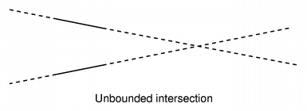
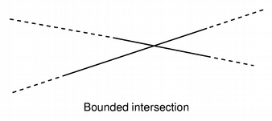
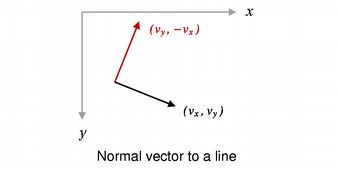

| Home · All Classes · Main Classes · Annotated · Grouped Classes · Functions |
The QLineF class provides a two-dimensional vector that uses floating point accuracy for coordinates. More...
#include <QLineF>
Part of the QtCore module.
The QLineF class provides a two-dimensional vector that uses floating point accuracy for coordinates.
A QLineF describes a finite length line (or line segment) on a two-dimensional surface. The start and end points of the line are specified using floating point coordinates.
Use isNull() to determine whether the QLineF represents a valid line or a null line.
The positions of the line's end points can be found with the p1(), x1(), y1(), p2(), x2(), and y2() functions. The horizontal and vertical components of the line are returned by the dx() and dy() functions.
Convenience functions are provided for finding the lines's length(), the unitVector() along the line, whether two lines intersect(), and the angle() between two lines. The line's length can be changed using setLength().
The line can be translated along the length of another line with the moveBy() function, and can be traversed using a parameter with the pointAt() function.
See also QPointF, QSizeF, QRectF, and QLine.
| Constant | Value | Description |
|---|---|---|
| QLineF::NoIntersection | 0 | Indicates that the lines do not intersect; i.e. they are parallel. |
| QLineF::UnboundedIntersection | 2 | The two lines intersect, but not within the range defined by their lengths. This will be the case if the lines are not parallel.  |
| QLineF::BoundedIntersection | 1 | The two lines intersect with each other within the start and end points of each line.  |
Constructs a null line.
Constructs a line object that represents the line between pt1 and pt2.
Constructs a line object that represents the line between (x1, y1) and (x2, y2).
Construct a QLineF from a integer-based QLine line.
Returns the line's start point.
See also x1(), y1(), and p2().
Returns the line's end point.
See also x2(), y2(), and p1().
Returns the x-coordinate of the line's start point.
See also y1(), p1(), and x2().
Returns the x-coordinate of the line's end point.
See also y2(), p2(), and x1().
Returns the y-coordinate of the line's start point.
See also x1(), p1(), and x2().
Returns the y-coordinate of the line's end point.
See also x2(), p2(), and y1().
Returns the smallest angle between the given line and this line, not taking into account whether the lines intersect or not. The angle is specified in degrees.
See also intersect().
Returns the horizontal component of the line's vector.
Returns the vertical component of the line's vector.
Returns a value indicating whether or not this line intersects the other line. By passing a valid pointer as intersectionPoint, it is possible to get the actual intersection point. The intersection point is undefined if the lines are parallel.
Returns true if the line is not set up with valid start and end point; otherwise returns false.
Returns the length of the line.
See also setLength().
Returns a line that is perpendicular to this line with the same starting point and length.

See also unitVector().
Returns the point at the parameterized position t, where the start and end point are defined to be at positions t=0 and t=1.
Sets the length of the line.
See also length().
Returns a QLine. The returned QLine's starting and end points are rounded to the nearest integer.
Translates this line with the point given.
This is an overloaded member function, provided for convenience. It behaves essentially like the above function.
Translates this line the distance dx and dy.
Returns a normalized version of this line, starting at the same point as this line. A normalized line is a line of unit length (length() is equal to 1.0).
See also normalVector().
Returns true if other is not the same as this line.
A line is different from another line if any of their points are different or their order is different.
Returns true if other is the same line as this line.
A line is identical if the two points are the same and their order is the same.
This is an overloaded member function, provided for convenience. It behaves essentially like the above function.
Writes the line to the stream and returns a reference to the stream.
See also Format of the QDataStream operators.
This is an overloaded member function, provided for convenience. It behaves essentially like the above function.
Reads a QLineF from the stream into the line and returns a reference to the stream.
See also Format of the QDataStream operators.
| Copyright © 2005 Trolltech | Trademarks | Qt 4.0.0 |